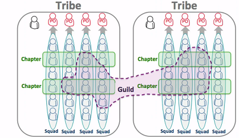
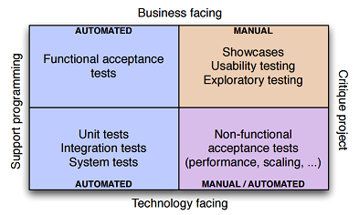
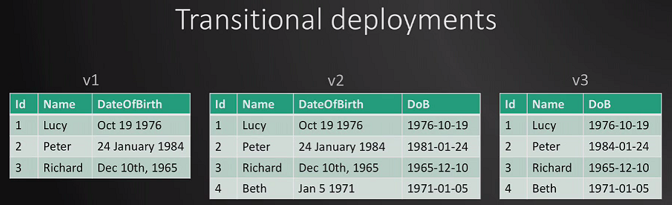

DevOps and Continuous Delivery¶
DevOps and continuous delivery are two hot topics these days, which play more and more important role in software development especially for the SaaS (Software as a Service) solution.
DevOps¶
DevOps is a software development and delivery process that emphasizes communication and collaboration between product management, software development, and operations professionals. It supports this by automating and monitoring the process of software integration, testing, deployment, and infrastructure changes by establishing a culture and environment where building, testing, and releasing software can happen rapidly, frequently, and more reliably.
Development teams are incentivized to deliver software as rapidly as possible, whereas operations teams aim for stability. DevOps strives to bring these two into one team.
The key of DevOps is to Add value and Improve flow.
Relationship with Lean¶
Lean has the following principles:
- Focus on customer value
- Eliminate waste
- Reduce cycle time
- Shared learning
- Avoid batching
- Theory of constraints
DevOps emphasize on the followings:
- Culture
- Automation
- Monitoring
- Sharing
DevOps is the result of implementing Lean principles to IT value stream. – Gene Kim
DevOps encourage culture changes, and emphasize the followings:
- Empowerment
- Accountability
- Teamwork
Reorgnization¶
Organizations which design systems... are constrained to produce designs which are copies of the communication structures of these organizations. – Conway’s law
Specialist encourage silos. Reorg the team as ‘Service team’. Project is too dynamic.
Spotify model is very interesting.
Tools¶
Use the right tool is important for DevOps, for DevOps there are tools to cover the whole life cycle.
- Collaboration: wiki in Github, Blog
- Planning: Trello
- Issue tracking: ZENDESK
- Configuration management: treat infrastructure as code, Chef, Salt, Puppet, Ansible, Powershell DSC
- Source control: Github
- Dev environment: CodeNVY, Vagrant
- Continuous integration: Jenkins, Travis CI,
- Continuous deployment: Cloudformation (Amazon), Packer, Docker, Octopus, Go (thoughtworks), Octopus deploy
Application Logging & Metrics
- ELMAH (Error Logging Modules and Handlers), NLog, Log4Net
- Serilog + Seq
- ELK - Elastic Search, LogStash, Kibana
- Application Insights
- RayGun.io
- HockeyApp (for mobile)
- Stackify
- NewRelic
Operation:
- Microsoft system center
- Splunk
Process Metrics
- Sprint Velocity
- Time spent by testers
- Time spent deploying
- Time spent getting a new developer up to speed
Code Metrics
- Code Analysis
- SSW Code Auditor
- SonarQube
Others practices¶
You can’t take your Puppet scripts and push them to a Chef agent, nor can you do the reverse. Puppet/Chef/etc are fully integrated stacks - and they’re proprietary stacks
Microsoft isn’t pushing DSC as a fully integrated stack. DSC is just the bottom layer that accepts a configuration and implements it. Puppet Labs could absolutely design their product to turn Puppet scripts into the MOF file that DSC needs.
Continuous Delivery¶
We want to deliver software often and deliver value to customers quicker. Continuous Delivery is important.
Anti patterns
- Deploying software manually
- Deploying to a production-like-environment only after development is complete (staging)
- Manual configuration management of production environment
The principles, practices, and techniques are aimed at making release boring.
Deployment pipeline¶
The deployment pipeline:
- Commit Stage: Compile, Unit test, Analysis, Build installer
- Automated acceptance testing
- Automated capacity testing
- Manual testing: Showcases, Exploratory testing
- Release
Ideally, a commit stage should take less than five minutes to run, and certainly no more than ten
The aim of the deployment pipeline is threefold:
- It makes every part of the process of building, deploying, testing and releasing software visible to everybody involved, aiding collaboration
- It improves feedback so that problems are identified and so resolved, as early in the process as possible
- It enables teams to deploy and release any version of their software to any environment at will through a fully automated process
Any stages that deploy the binaries to a production-like environment for manual testing or release purposes should require you to press a button in order to select the version to deploy, and this capability will usually require authorization.
The deployment pipeline implementation you create should record every time a process starts and finishes, and what the exact changes were that went through each stage of your process.
We need to automate the deployment pipeline gradually over time.
If it hurts, do it more frequently, and bring the pain forward. More frequent releases lead to lower risk in putting out any particular release
Create a script for each stage in your deployment pipeline
Manage changes¶
A working software can be decomposed into four categories: executable code, configuration, host environment, and data. If any of them changes, the behavior changes. Therefore we need to keep all these four of these components under control and ensure that a change in any one of them is verified.
Configuration management of every application should be planned as part of project inception.
Automate test suite¶
Automated Test Suite
Two stages:
- Compile the software, run your suite of unit tests, create deployable binary (Commit stage)
- Take the binaries from first stage and run acceptance tests, integration tests, performance tests concurrently
Make sure that the automated tests, including smoke tests can be run on developer machines.
Test automation pyramid - Mike Cohn
Acceptance testing¶
The goal of the acceptance test stage is to assert that the system delivers the value the customer is expecting and that it meets the acceptance criteria. The reality is that the whole team owns the acceptance tests Acceptance tests should be expressed in the language of the business, not in the language of the technology of the application.
Acceptance criteria: Given, When, Then
Test implementation layer: code uses domain language; no reference to UI elements
Application driver layer: understands how to interact with the application to perform actions and return results
The objective of acceptance testing is to prove that our application does what the customer meant it to, not that it works the way its programmers think it should.
An application written with testability in mind will have an API that both the GUI and the test harness can talk to in order to drive the application.
Non-functional requirement¶
While in an ideal world everyone wants their systems to be highly secure, very high performance, massively flexible, extremely scalable, easy to use, easy to support, and simple to develop and maintain, in reality every one of these characteristics comes at a cost.
Every architecture involves some trade-off between nonfunctional requirements - hence the Software Engineering Institute’s Architecture Tradeoff Analysis Model (ATAM) designed to help teams decide upon a suitable architecture by a thorough analysis of its NFR (nonfunctional requirement, referred to as ‘quality attributes’)
Here are some types of measurements that can be performed:
- Scalability testing. How do the response time of an individual request and the number of possible simultaneous users change as we add more servers, services, or threads?
- Longevity testing. This involves running the system for a long time to see if the performance changes over a protracted period of operation. This type of testing can catch memory leaks or stability problems
- Throughput testing. How many transactions, or messages, or page hits per second can the system handle?
- Load testing. What happens to capacity when the load on the application increases to production-like proportions and beyond? This is perhaps the most common class of capacity testing.
- Capacity testing. Is one of the few situations where virtualisation is not appropriate (unless your production environment is virtual) because of the performance overhead it introduces
Distributed version control system¶
The core characteristic of a distributed version control system (DVCSs) is that every repository contains the entire history of the project, which means that no repository is privileged except by convention.
In the GitHub model, contributors are made by first forking the repository of the project you wish to contribute to, making your changes, and then asking the owners of the original repository to pull your changes.
A particular release of the software could come from any of the forks, provided it passed all the tests and was accepted by the project leaders.
DVCSs can be extremely effective as part of a traditional continuous integration system, in which there is designated central repository to which everybody regularly pushes their changes.
Brach by feature¶
This pattern is designed to make it easier for large teams to work simultaneously on features while keeping mainline in a releasable state. Every story or feature is developed on a separate branch. Only after a story is accepted by testers, it is merged to mainline so as to ensure that mainline is always releasable.
Prerequisites:
- Any changes from mainline must be merged onto every branch on a daily basis
- Branches must be short-lived, ideally less than a few days, never more than an iteration
- The number of active branches that exist at any time must be limited to the number of stories in play. Nobody should start a new branch unless the branch representing their previous story is merged back to mainline.
- Consider having testers accept stories before they are merged. Only allow developers to merge to trunk once a story has been accepted
- Refactorings must be merged immediately to minimize merge conflicts. This constraint is important but can be painful, and further limits the utility of this pattern
- Part of the technical lead’s role is to be responsible for keeping the trunk releasable. The tech lead should review all merges, perhaps in patch form. The tech lead has the right to reject patches that may potentially break the trunk.
Give developers ownership¶
At some organizations, there are teams of specialists who are experts at the creation of effective, modular build pipelines and the management of the environments in which they run.
Run-of-the-mill changes, such as adding new libraries, configuration files, and so on, should be performed by developers and operations people working together as they find the need to do so.
This kind of activity should not be done by a build specialist, except perhaps in the very early days of a project when the team is working to establish the build. We consider it a failure if we got to the point where only those specialists can maintain the CI system.
The expertise of specialists is not to be undervalued, but their goal should be to establish good structures, patterns, and use of technology, and to transfer their knowledge to the delivery team. Once these ground rules are established, their specialist expertise should only be needed for significant structural shifts, not regular day-to-day build maintenance.
Roll back¶
It is essential to be able to roll back a deployment in case it goes wrong.
Two important constraints:
- Data, if your release process makes changes to your data, it can be hard to roll back.
- The other systems you integrate with. With releases involving more than one system (known as orchestrated releases), the rollback process becomes more complex too.
Rolling back by redeploying the previous good version
Transitional deployment is important if something goes wrong and want to ‘roll back’.
Release experience¶
Release a new version of software installed by users on their own machines:
- Managing and upgrade experience
- Migrating binaries, data, and configuration
- Testing the upgrade process
- Getting crash report from users
3 approaches:
- Let software check update and prompt the users to download and upgrade to the new version
- Download in the background and prompt for installation
- Download in the background and silently upgrade the next time the application is restarted
So in fact, giving users a choice simply tells them that the developers have no confidence in the upgrade process. Don’t delete the old files, move them
Essential practices¶
The essential practices include:
- Don’t check in on a broken build
- Always run all commit tests locally before committing, or get your CI server to do it for you: Pretested commit, personal build, or preflight build (supported by modern CI)
- Wait for commit tests to pass before moving on
- Never go home on a broken build
- Always be prepared to revert to the previous revision
- Time-box fixing before reverting
- Don’t comment out failing tests
- Take responsibility for all breakages that result from your changes
Deploying user stories
- Stories are the unit of work for building the product
- Stories should be tested as soon as they are finished
- Stories can be deployed as soon as they are tested
- Stories may be deployed in batch in order to reduce overhead
CI/CD:
- Only build your binaries once
- Automate deployment
- (easy rollback)
- Deploy the same way to every environment
- Smoke test your deployments
- Deploy into a copy of production
- If any part of the pipeline fails, stop the line
Other practices¶
What we end up with is (in lean parlance) a pull system:
- Book: Lean software development: An Agile Toolkit
- Implementing Lean Software Development: From Concept to Cash
Visualize the release status through Release dashboard
Zero-downtime releases
Canary release:
- Rolling back easily
- A/B testing
- Check capacity requirements gradually
Written by Binwei@Oslo